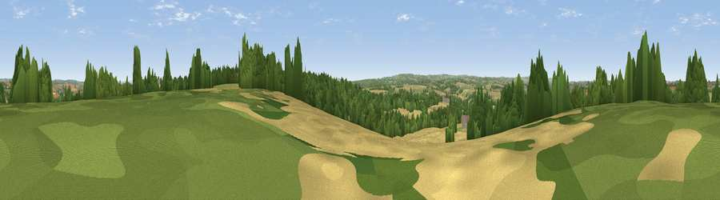

Viewpoint near Hemington
#24945 in England · top 45% of its area beats it · near HemingtonWhere it is
The exact computed spot (ST 71125 53775). Click the marker for map links.
The view, rendered

A 360° render of this exact spot computed from the terrain model, tree cover and land cover — summer colours, afternoon light, calibrated against photographs of famous viewpoints. Real trees, hedges and buildings will differ in detail.
The panorama
Grey silhouette: terrain skyline in each direction (720 bearings, Earth curvature and refraction included). Dashed green: skyline with trees (+15 m) and buildings (+8 m) as obstacles. Blue strip: how far the ground is visible on each bearing.
Where the view opens
Wedge length = distance to the farthest visible ground on that bearing (vegetation-aware). Rings at 10, 25 and 50 km.
What fills the view
42% cropland · 28% grassland · 27% woodland · 4% built-up
Angular shares of the visible panorama (visual magnitude), not map area. Landscape diversity 0.52 (0–1 Shannon).
Key numbers
More beautiful places nearby
The staircase of upgrades: each row has a higher view potential than everything closer. Driving times are estimates from straight-line distance, calibrated against real road routing — check an actual route before setting out.
| Place | Direction | Drive | Score |
|---|---|---|---|
| Huddox Hill | N · 4 km | ~9 min | 57.3 |
| Viewpoint near Peasedown St. John | NNE · 4 km | ~10 min | 60.1 |
| Viewpoint near Inglesbatch | N · 7 km | ~14 min | 68.8 |
| Viewpoint near Chelwood | NW · 10 km | ~19 min | 70.6 |
| Viewpoint near Oakhill | SW · 10 km | ~20 min | 71.3 |
| Viewpoint near Kelston | N · 13 km | ~24 min | 74.2 |
| Viewpoint near North Stoke | N · 15 km | ~27 min | 75.4 |
| Cley Hill | SE · 16 km | ~28 min | 76.8 |
51.28238, -2.41539 · source: screening · position refined by local search. Computed location — check access rights before visiting.